하단 메뉴 · 고른 칸을 회색으로
- 바뀌는 것: 고른 칸 알약 바탕색과 채운 아이콘 색만. 모양 · 크기 · 움직임 · 빨간 점은 그대로.
- N1 연회색: 가장 조용해요. 고른 칸이 은은하게 칠해진 느낌.
- N2 회색: 한 단계 진하게. "회색으로 칠해진 느낌"이 가장 분명하면서 화면을 누르지 않아요.
- N3 진한 회색: 흰 아이콘 · 검은 알약. 가장 또렷하지만 화면에서 가장 센 요소가 돼요.
- MY 칸: 내 사진 테두리도 파랑 대신 회색(cool-neutral-700).
지금파랑: 하늘 100 바탕 + sky-600 아이콘
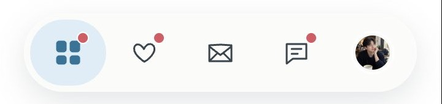
홈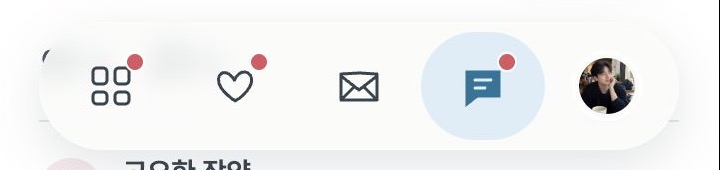
익명 이야기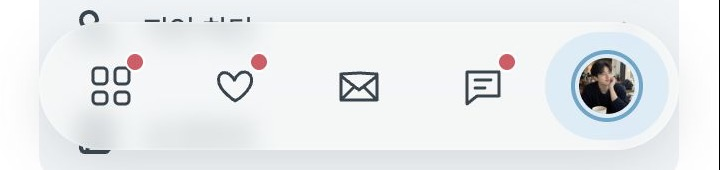
MYN1연회색: cool-neutral-100 바탕 + 800 아이콘
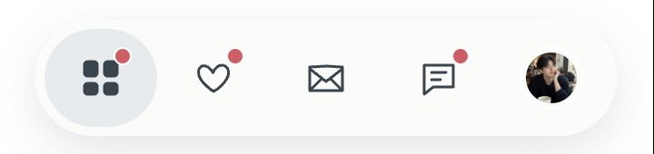
홈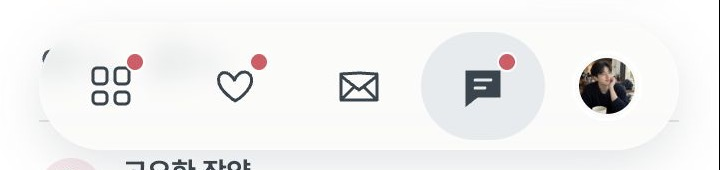
익명 이야기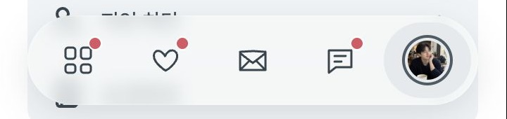
MYN2회색: cool-neutral-200 바탕 + 900 아이콘
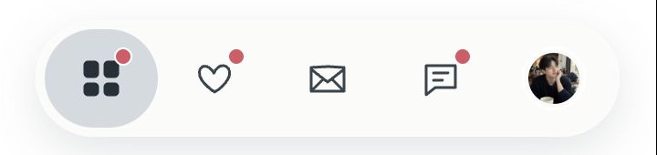
홈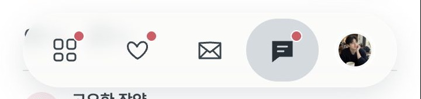
익명 이야기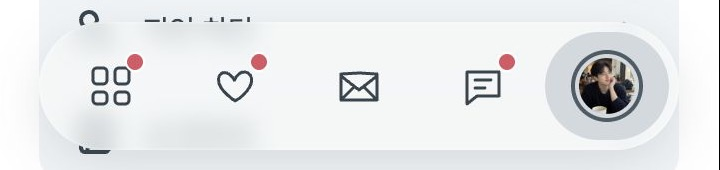
MYN3진한 회색: cool-neutral-800 바탕 + 흰 아이콘
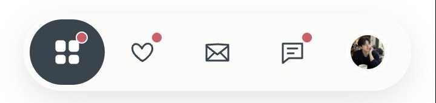
홈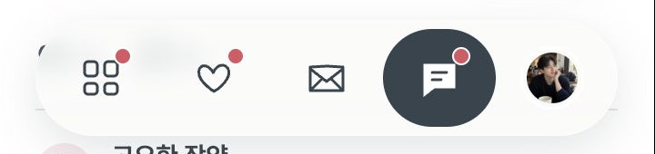
익명 이야기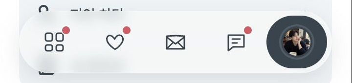
MY